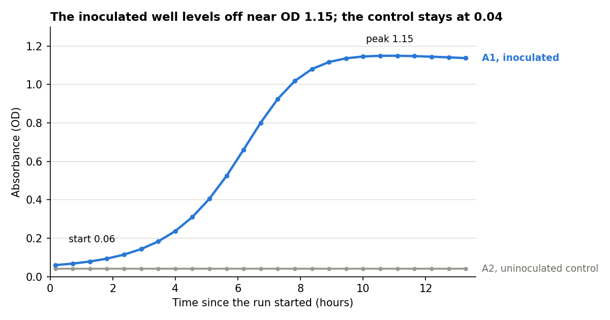

CHESSSim simulates an automated microbiology lab. Experiments are submitted as protocols, which are JSON files listing lab operations. The simulator validates the protocol, runs the operations in order, and returns the plate reads. The organism is Streptococcus gulonis strain A2. Its growth requirements are unknown.
Each submission is processed in four steps:
The only measurements available are plate reads from the Epoch2. The contents of a well cannot be observed directly. Each submission starts with a new lab in the initial state described in this manual.
Results and error messages refer to operations by their index in the protocol, starting at 1.
The lab has six top-level locations. All labware starts on the Bench, and all slots start empty.
The tree below shows every location. A location's path is the list of names from the top of the tree, separated by / and omitting Lab. Locations marked "fixed" cannot be moved.
Lab 22 °C (except the PlateHotel, once set)
├── Bench starting labware
│ ├── Plate1, Plate2, Plate3, Plate4 96-well plates, empty
│ ├── DeepPlate1, DeepPlate2 deep-well 96-well plates (2 mL wells), empty
│ ├── alanine, arginine, aspartic_acid, asparagine, glutamic_acid, glutamine, glycine,
│ │ histidine, isoleucine, leucine, lysine, methionine, phenylalanine, proline,
│ │ serine, threonine, tryptophan, tyrosine, valine, cysteine
│ │ amino acid tubes, 50× CDM
│ ├── Glucose glucose tube, 50× CDM
│ ├── CDMBase1, CDMBase2, CDMBase3, CDMBase4 2× CDM base tubes
│ ├── CDM complete CDM tube, 1×
│ ├── Water1, Water2, Water3, Water4 sterile water tubes
│ └── SGU_A2 S. gulonis A2 in PBS, OD 1.0
├── Human moves plates and tubes between the Bench and the Nimbus
├── Nimbus liquid handler with one SingleChannel head
│ ├── Slot1 plate slot, empty
│ ├── Slot2 plate slot, empty
│ ├── Slot3 plate slot, empty
│ ├── Slot4 plate slot, empty
│ ├── Slot5 (fixed)
│ │ └── Rack1 (fixed) 50 mL tube rack
│ │ └── Slot1, Slot2, Slot3, Slot4, Slot5, Slot6 tube slots, empty
│ ├── Slot6 (fixed)
│ │ └── Rack2 (fixed)
│ │ └── Slot1, Slot2, Slot3, Slot4, Slot5, Slot6
│ ├── Slot7 (fixed)
│ │ └── Rack3 (fixed)
│ │ └── Slot1, Slot2, Slot3, Slot4, Slot5, Slot6
│ ├── Slot8 (fixed)
│ │ └── Rack4 (fixed)
│ │ └── Slot1, Slot2, Slot3, Slot4, Slot5, Slot6
│ └── Waste (fixed) waste bottle, one well A1, 1 L
├── PlateHotel incubator (plate storage at a set temperature)
│ ├── Drawer1
│ │ └── Slot1, Slot2 96-well plate slots, empty
│ ├── Drawer2
│ │ └── Slot1, Slot2
│ ├── Drawer3
│ │ └── Slot1, Slot2
│ └── Drawer4
│ └── Slot1, Slot2
├── PlateCrane moves plates between Nimbus Slot1–Slot4, the PlateHotel and the Epoch2
└── Epoch2 absorbance plate reader
└── Slot1 96-well plate slot, empty
For example, the first tube slot in Rack1 is Nimbus/Slot5/Rack1/Slot1, and the liquid in the CDM tube is Bench/CDM/A1 (until the tube is moved).
The lab has five instruments. Each instrument performs one type of operation. All operations specify an instrument, and moves and transfers also specify a head.
| Instrument | Description | Operation | Head | Reach |
|---|---|---|---|---|
Nimbus |
Liquid-handling robot with one pipetting channel | transfer |
SingleChannel |
The Nimbus deck: plates in Slot1–Slot4, tubes in Rack1–Rack4, and Waste |
Human |
A person who moves labware by hand | move |
Hands |
The Bench and the Nimbus deck |
PlateCrane |
Robotic arm for plates | move |
Gripper |
Nimbus Slot1–Slot4, the PlateHotel and the Epoch2 |
PlateHotel |
Temperature-controlled plate storage with 4 drawers of 2 slots | set_attribute (Temperature) |
none | Itself. Plates are loaded and unloaded by the PlateCrane. |
Epoch2 |
Absorbance plate reader with one plate slot | read (Absorbance) |
none | The plate in its slot. A read measures every well of the plate. |
The Bench holds the starting labware. It is not an instrument; labware on the Bench can only be stored or moved.
The lab is at room temperature (22 °C). The PlateHotel is also at 22 °C until its temperature is set. Wells are at the temperature of their current location, including the Nimbus deck and the Epoch2.
No instrument can reach every location. The Human moves plates between the Bench and the Nimbus plate slots, and the PlateCrane moves plates between the Nimbus plate slots, the PlateHotel, and the Epoch2. Tubes can only be moved by the Human between the Bench and the Nimbus tube racks. All moves can be made in either direction:
┌──────── Nimbus deck ────────┐
┌──────────────┐ Human │ ┌───────────────────────┐ │ PlateCrane ┌────────────────────┐
│ Bench │◀─ plates ────▶│ │ Plate slots │◀─┼──────────────▶│ PlateHotel │
│ │ │ │ Slot1 to Slot4 │ │ │ 8 plate slots at │
│ 4 plates │ │ └───────────────────────┘ │ │ a set temperature │
│ 2 deep-well │ │ ▲ │ │ │
│ plates │ │ │ PlateCrane │ └────────────────────┘
│ 31 tubes │ │ ▼ │ ▲
│ │ │ (to the Epoch2) ───────┼──────────┐ │ PlateCrane
│ │ Human │ ┌───────────────────────┐ │ │ ▼
│ │◀─ tubes ─────▶│ │ Tube racks │ │ │ ┌────────────────────┐
└──────────────┘ │ │ Rack1 to Rack4 │ │ └───▶│ Epoch2 │
│ │ (Slot5 to Slot8) │ │ │ reads the plate │
│ └───────────────────────┘ │ └────────────────────┘
│ SingleChannel pipettes │
│ between any wells on the │
│ deck, and into Waste │
└─────────────────────────────┘
The Bench starts with 6 empty plates and 31 tubes. Each tube contains 45 mL.
| Labware | Names | Wells | Well capacity | Allowed locations |
|---|---|---|---|---|
| 96-well plate | Plate1–Plate4 |
A1–H12 (rows A–H, columns 1–12) | 400 µL | Bench, Nimbus Slot1–Slot4, PlateHotel, Epoch2 |
| Deep-well 96-well plate | DeepPlate1–DeepPlate2 |
A1–H12 | 2 mL | Bench, Nimbus Slot1–Slot4 |
| 50 mL conical tube | 31 tubes, named below | one well, A1 |
50 mL | Bench, Nimbus rack slots |
| Waste bottle | Waste, fixed on the Nimbus deck |
one well, A1 |
1 L | cannot be moved |
| Tube names | Contents |
|---|---|
alanine, arginine, aspartic_acid, asparagine, glutamic_acid, glutamine, glycine, histidine, isoleucine, leucine, lysine, methionine, phenylalanine, proline, serine, threonine, tryptophan, tyrosine, valine, cysteine |
One amino acid each in water, at 50× its concentration in CDM |
Glucose |
Glucose in water at 50× CDM (500 g/L) |
CDMBase1, CDMBase2, CDMBase3, CDMBase4 |
2× CDM base: every CDM component except the 20 amino acids and glucose |
CDM |
Complete CDM at 1× |
Water1, Water2, Water3, Water4 |
Sterile water |
SGU_A2 |
S. gulonis A2 in PBS (phosphate-buffered saline) at OD 1.0 |
The tube racks hold 24 tubes, so at most 24 of the 31 tubes can be on the Nimbus at once.
The table lists the concentrations in 1× CDM. The 2× base contains all components except the amino acids and glucose at twice these concentrations. The single-component tubes are 50× stocks.
| Component | 1× CDM (mg/L) | Stock tube |
|---|---|---|
| D-glucose | 10,000 | Glucose, 500 g/L |
| L-cysteine hydrochloride monohydrate | 650 | cysteine, 32.5 g/L |
| L-threonine | 200 | threonine, 10 g/L |
| Each other amino acid: DL-alanine, L-arginine, L-aspartic acid, L-asparagine, L-glutamic acid, L-glutamine, glycine, L-histidine, L-isoleucine, L-leucine, L-lysine monohydrochloride, L-methionine, L-phenylalanine, L-proline, L-serine, L-tryptophan, L-tyrosine, L-valine | 100 each | named tube, 5 g/L each |
| Sodium phosphate dibasic heptahydrate | 13,900 | base |
| Sodium acetate trihydrate | 4,500 | base |
| Sodium phosphate monobasic monohydrate | 3,160 | base |
| Sodium bicarbonate | 2,500 | base |
| Potassium phosphate monobasic | 1,000 | base |
| Magnesium sulfate heptahydrate | 700 | base |
| Potassium phosphate dibasic | 200 | base |
| Adenine, guanine hydrochloride, uracil | 25 each | base |
| Calcium chloride dihydrate | 6.76 | base |
| Manganese sulfate monohydrate | 5 | base |
| Iron(II) sulfate | 5 | base |
| β-NADPH | 2.5 | base |
| Calcium pantothenate | 2 | base |
| Riboflavin | 2 | base |
| Iron(III) nitrate | 1 | base |
| Niacinamide, pyridoxal hydrochloride, pyridoxamine dihydrochloride, thiamine hydrochloride | 1 each | base |
| Folic acid | 0.8 | base |
| Biotin | 0.2 | base |
| 4-Aminobenzoic acid | 0.2 | base |
| Vitamin B12 | 0.1 | base |
200 µL of complete 1× CDM can be made from 100 µL of 2× base, 4 µL of glucose, 4 µL of each of the 20 amino acids, and 16 µL of water or other additions.
The simulator enforces the physical limits of the real lab. Operations that violate these limits are rejected during validation.
| Constraint | Description |
|---|---|
| One plate per Nimbus plate slot | Slot1–Slot4 each hold one plate, regular or deep-well. |
| Rack slots hold racks | Slot5–Slot8 contain Rack1–Rack4 and cannot hold plates. |
| Tubes go in tube slots | Tubes are placed in rack slots (Rack1–Rack4, Slot1–Slot6), one per slot. Tubes cannot be placed in plate slots, and plates cannot be placed in tube slots. |
| Labware in slots | Labware on the Nimbus must be in a slot. |
| 96-well plates only in the PlateHotel and Epoch2 | Each PlateHotel slot and the Epoch2 slot holds one standard 96-well plate. Deep-well plates can only be on the Bench or the Nimbus deck. |
| Fixed hardware | Deck slots, racks, and the Waste bottle cannot be moved. |
| Moving labware | Only plates and tubes can be moved, not individual wells. |
| Reach | Both locations in a move must be within the reach of the instrument (see Equipment). |
| Pipetting range | Each transfer is 2–1000 µL. Larger volumes require multiple transfers. |
| Well capacity | The recipient cannot be overfilled (400 µL per well, 2 mL per deep well, 50 mL per tube, 1 L for Waste). |
| Donor volume | The donor must contain at least the volume transferred. |
| Reading | Plates are read in Epoch2/Slot1. |
| Temperature | Only the PlateHotel temperature can be set. |
| Sequential operations | Operations run one at a time. Each operation starts when the previous operation finishes. |
Wells are always well mixed, so a transfer takes a proportional amount of every component in the donor, including cells. Operations are checked in order against the state left by the previous operations. For example, three 170 µL transfers into a 400 µL well will pass, pass, and fail.
A protocol is a JSON object with one key, operations, which contains a list of operations in the order they are run:
{"operations": [
{"op": "move", "child": "Bench/Plate1", "parent": "Nimbus/Slot1", "instrument": "Human", "head": "Hands"},
{"op": "pause", "duration": 10, "unit": "minute"}
]}
Protocols can be written by hand or generated with a script in any language. We recommend generating protocols with a script.
Each location is identified by its path, which lists the locations that contain it, separated by /. The path does not include Lab. Examples from the initial lab:
| Path | Location |
|---|---|
Bench/Plate1 |
Plate1 on the Bench |
Bench/Plate1/A1 |
Well A1 of Plate1 |
Bench/CDM/A1 |
The liquid in the CDM tube (a tube has one well, A1) |
Nimbus/Slot5/Rack1/Slot2 |
Tube slot 2 of Rack1, which is in Nimbus Slot5 |
Nimbus/Waste/A1 |
The waste bottle |
PlateHotel/Drawer3/Slot2 |
Slot 2 of PlateHotel Drawer3 |
Epoch2/Slot1 |
The plate reader slot |
Paths change when labware is moved. After Plate1 is moved from the Bench to Nimbus/Slot1, its wells are Nimbus/Slot1/Plate1/A1, etc. After the PlateCrane moves the plate to the PlateHotel, the wells are PlateHotel/Drawer1/Slot1/Plate1/A1. Each operation must use the current path of the labware.
All fields shown are required unless noted. Any operation can include an optional "comment" field.
move moves a plate or tube (child) to a new location (parent). Use Human/Hands between the Bench and the Nimbus, and PlateCrane/Gripper between Nimbus Slot1–Slot4, the PlateHotel, and the Epoch2.
{"op": "move", "child": "Bench/SGU_A2", "parent": "Nimbus/Slot5/Rack1/Slot2", "instrument": "Human", "head": "Hands"}
transfer transfers liquid from a donor well to a recipient well. Both wells must be on the Nimbus deck.
{"op": "transfer", "donor": "Nimbus/Slot5/Rack1/Slot1/CDM/A1", "recipient": "Nimbus/Slot1/Plate1/A1", "quantity": 196, "unit": "µL", "instrument": "Nimbus", "head": "SingleChannel"}
set_attribute sets the PlateHotel temperature. Plates in the PlateHotel are at the new temperature.
{"op": "set_attribute", "location": "PlateHotel", "attribute": "Temperature", "value": 37, "unit": "°C", "instrument": "PlateHotel"}
read measures the absorbance (OD) of every well of the plate in the Epoch2. The kind field is optional; Absorbance is the only kind available.
{"op": "read", "location": "Epoch2/Slot1/Plate1", "kind": "Absorbance", "instrument": "Epoch2"}
pause waits for a fixed time. Plates remain in their current locations.
{"op": "pause", "duration": 30, "unit": "minute"}
| Quantity | Units accepted |
|---|---|
| Volume | µL, uL, ul, mL, ml |
| Temperature | °C, C, degC |
| Time | s, min, minute, h, hr |
Alternative spellings are converted to µL, °C, minute, and hr in the results timeline.
Operations run sequentially in the order listed. The duration of each operation is set by the instrument, and operations cannot be given start times. Use pause to wait, e.g. a read followed by a 30-minute pause and another read. The time between reads includes the pause, the moves, and the read. The results timeline lists the start and finish time of every operation, which can be used to adjust pauses.
Each student has a shared folder named with their student ID. The folder contains three subfolders:
<your student ID>/
├── test/ validate a protocol (results returned immediately)
├── run/ run a protocol (results returned after a delay)
└── results/ results are returned here
.json file and copy it to test/ or run/. The file is removed from the folder when the server receives it.test/ are validated but not run. The results file <name>_<date-time>.test.json contains the validation report and the timeline, but no reads. There is no limit on tests.run/ are simulated. A file <name>_<date-time>.pending.json is returned immediately with the time the results will be released. At that time it is replaced by <name>_<date-time>.results.json, which includes the reads. Invalid protocols are returned immediately.Each run returns one results file, which contains one record per well per read. Test results have the same format without reads. Files that cannot be parsed return status "error" and a message.
| Key | Contents |
|---|---|
mode, submission, received |
test or run, the submitted file name, and the time it was received |
status |
"ok" if the protocol ran; "invalid" if the protocol failed validation and was not run; "failed" if an operation could not be completed during the run |
validation |
Validation errors, each with the operation index, a rule, and a message. Empty for valid protocols. |
operations |
The timeline: one entry per operation, with its index, the requested operation, and its start and finish times (start_s and finish_s in seconds from the start of the run, and start_time as a clock time) |
duration_min |
Total run time in minutes |
reads |
All measurements (see below) |
failed_op |
The index of the operation that failed (only when status is "failed"). The run stops at this operation, and all reads before it are returned. |
Each read operation measures all 96 wells and returns 96 records, including empty wells. The record below is from the first read in the example protocol:
{
"op_index": 11,
"time_min": 10.633333333333333,
"sim_time": "2026-01-05T09:10:38",
"instrument": "Epoch2",
"location": "Epoch2/Slot1/Plate1",
"well": "Epoch2/Slot1/Plate1/A1",
"kind": "Absorbance",
"value": 0.060004737151923004,
"unit": "OD",
"environment": {"Temperature": {"value": 22.0, "unit": "°C"}}
}
| Field | Description |
|---|---|
op_index |
Index of the read operation |
time_min, sim_time |
Time of the read, in minutes since the start of the run and as a clock time |
location, well |
Paths of the plate and well at the time of the read |
kind, value, unit |
The measurement (absorbance, in OD) |
environment |
Conditions in the well during the read |
Plates are read in the Epoch2 at room temperature, so environment shows 22 °C even for plates that are incubated at 37 °C between reads.
The well path changes as the plate moves, but the well name (e.g. A1) does not. Use the well name to match reads over time.
This protocol grows S. gulonis A2 in complete CDM in well A1 of Plate1, with an uninoculated control in A2. The plate is read approximately every 30 minutes for 12 hours. The protocol has 108 operations in six steps:
1 Warm the PlateHotel to 37 °C 1 set_attribute
│
▼
2 Bring CDM, cells, water and Plate1 to the Nimbus 4 moves
│
▼
3 Fill A1 with CDM + cells, A2 with CDM + water 4 transfers
│
▼
4 Initial read; move plate to the PlateHotel move, read, move
│
▼
5 Pause 30 min, read, return ◀──┐ pause, move, read, move
│ └────────┘ 24 times
▼
6 Analyze A1 and A2 25 reads of 96 wells
Step 1. Set the PlateHotel to 37 °C. The temperature is set first so the PlateHotel is at 37 °C when the plate arrives.
{"op": "set_attribute", "location": "PlateHotel", "attribute": "Temperature", "value": 37, "unit": "°C", "instrument": "PlateHotel"}
Step 2. Move the tubes and plate to the Nimbus. The Human moves the CDM, cell, and water tubes to the first three slots of Rack1, and Plate1 to Slot1.
{"op": "move", "child": "Bench/CDM", "parent": "Nimbus/Slot5/Rack1/Slot1", "instrument": "Human", "head": "Hands"},
{"op": "move", "child": "Bench/SGU_A2", "parent": "Nimbus/Slot5/Rack1/Slot2", "instrument": "Human", "head": "Hands"},
{"op": "move", "child": "Bench/Water1", "parent": "Nimbus/Slot5/Rack1/Slot3", "instrument": "Human", "head": "Hands"},
{"op": "move", "child": "Bench/Plate1", "parent": "Nimbus/Slot1", "instrument": "Human", "head": "Hands"}
Step 3. Fill the wells. Each well receives 196 µL of CDM. A1 receives 4 µL of cells (a 50-fold dilution of OD 1.0, for a starting OD of 0.02), and the control A2 receives 4 µL of water. Both wells contain 200 µL. The paths use the new locations of the tubes and plate.
{"op": "transfer", "donor": "Nimbus/Slot5/Rack1/Slot1/CDM/A1", "recipient": "Nimbus/Slot1/Plate1/A1", "quantity": 196, "unit": "µL", "instrument": "Nimbus", "head": "SingleChannel"},
{"op": "transfer", "donor": "Nimbus/Slot5/Rack1/Slot2/SGU_A2/A1", "recipient": "Nimbus/Slot1/Plate1/A1", "quantity": 4, "unit": "µL", "instrument": "Nimbus", "head": "SingleChannel"},
{"op": "transfer", "donor": "Nimbus/Slot5/Rack1/Slot1/CDM/A1", "recipient": "Nimbus/Slot1/Plate1/A2", "quantity": 196, "unit": "µL", "instrument": "Nimbus", "head": "SingleChannel"},
{"op": "transfer", "donor": "Nimbus/Slot5/Rack1/Slot3/Water1/A1", "recipient": "Nimbus/Slot1/Plate1/A2", "quantity": 4, "unit": "µL", "instrument": "Nimbus", "head": "SingleChannel"}
Step 4. Initial read. The PlateCrane moves the plate to the Epoch2, the plate is read, and the PlateCrane moves the plate to the PlateHotel.
{"op": "move", "child": "Nimbus/Slot1/Plate1", "parent": "Epoch2/Slot1", "instrument": "PlateCrane", "head": "Gripper"},
{"op": "read", "location": "Epoch2/Slot1/Plate1", "kind": "Absorbance", "instrument": "Epoch2"},
{"op": "move", "child": "Epoch2/Slot1/Plate1", "parent": "PlateHotel/Drawer1/Slot1", "instrument": "PlateCrane", "head": "Gripper"}
Step 5. Incubate and read (24 cycles). Each cycle pauses for 30 minutes, then moves the plate to the Epoch2, reads it, and returns it to the PlateHotel. Reads are slightly more than 30 minutes apart because the moves and read also take time.
{"op": "pause", "duration": 30, "unit": "minute"},
{"op": "move", "child": "PlateHotel/Drawer1/Slot1/Plate1", "parent": "Epoch2/Slot1", "instrument": "PlateCrane", "head": "Gripper"},
{"op": "read", "location": "Epoch2/Slot1/Plate1", "kind": "Absorbance", "instrument": "Epoch2"},
{"op": "move", "child": "Epoch2/Slot1/Plate1", "parent": "PlateHotel/Drawer1/Slot1", "instrument": "PlateCrane", "head": "Gripper"}
Repeated operations are easiest to generate with a script. This Python script writes the complete protocol:
import json
rack, plate = "Nimbus/Slot5/Rack1", "Nimbus/Slot1/Plate1"
hotel, reader = "PlateHotel/Drawer1/Slot1", "Epoch2/Slot1"
def move(child, parent, instrument, head):
return {"op": "move", "child": child, "parent": parent, "instrument": instrument, "head": head}
def transfer(donor, recipient, ul):
return {"op": "transfer", "donor": donor, "recipient": recipient, "quantity": ul,
"unit": "µL", "instrument": "Nimbus", "head": "SingleChannel"}
def read():
return {"op": "read", "location": f"{reader}/Plate1", "kind": "Absorbance", "instrument": "Epoch2"}
ops = [{"op": "set_attribute", "location": "PlateHotel", "attribute": "Temperature",
"value": 37, "unit": "°C", "instrument": "PlateHotel"}]
for slot, tube in enumerate(["CDM", "SGU_A2", "Water1"], start=1):
ops.append(move(f"Bench/{tube}", f"{rack}/Slot{slot}", "Human", "Hands"))
ops.append(move("Bench/Plate1", "Nimbus/Slot1", "Human", "Hands"))
ops += [transfer(f"{rack}/Slot1/CDM/A1", f"{plate}/A1", 196),
transfer(f"{rack}/Slot2/SGU_A2/A1", f"{plate}/A1", 4),
transfer(f"{rack}/Slot1/CDM/A1", f"{plate}/A2", 196),
transfer(f"{rack}/Slot3/Water1/A1", f"{plate}/A2", 4)]
ops += [move(plate, reader, "PlateCrane", "Gripper"), read(),
move(f"{reader}/Plate1", hotel, "PlateCrane", "Gripper")]
for _ in range(24):
ops += [{"op": "pause", "duration": 30, "unit": "minute"},
move(f"{hotel}/Plate1", reader, "PlateCrane", "Gripper"), read(),
move(f"{reader}/Plate1", hotel, "PlateCrane", "Gripper")]
with open("growth_curve.json", "w") as f:
json.dump({"operations": ops}, f, indent=2, ensure_ascii=False)
Step 6. Analyze the results. The run returns 25 plate reads, or 2,400 records (96 per read). The plot shows wells A1 and A2 against time_min:

The inoculated well grows from OD 0.06 to a maximum of about 1.15. The uninoculated control stays at OD 0.04, the same as an empty well. Growth should always be compared to an uninoculated control.
Errors are reported at two levels. Files that are not valid protocols are rejected with a message that identifies the operation, e.g. an unknown op, a misspelled, extra, or missing field, or a transfer quantity that is not a volume. Valid files are then checked operation by operation, and all errors are listed in validation with one of the following rules:
| Rule | Cause | Fix |
|---|---|---|
unknown_location |
The path does not exist at that point in the protocol | Check spelling and capitalization; use the current path after a move |
unknown_instrument |
Unknown instrument name | Use Nimbus, Human, PlateCrane, PlateHotel or Epoch2 |
unknown_head |
The instrument does not have that head | Nimbus → SingleChannel, Human → Hands, PlateCrane → Gripper |
wrong_head_type |
Wrong head for the operation | Transfers use the Nimbus; moves use the Human or the PlateCrane |
unreachable |
The instrument cannot reach a location | See the Reach column under Equipment |
volume_out_of_range |
Transfer volume below 2 µL or above 1000 µL | Split large transfers; dilute stocks for small volumes |
not_a_well |
A transfer specifies labware instead of a well | Add the well, e.g. /A1 |
empty_donor |
The donor well is empty | Fill the donor first |
not_movable |
A move specifies a well | Move the plate or tube |
not_in_instrument |
The location is not in the instrument | Read plates in Epoch2/Slot1; set the temperature on PlateHotel |
not_actuatable |
The attribute cannot be set on that instrument | Only Temperature, only on the PlateHotel |
unreadable_kind, unsupported_read |
Read kind other than absorbance | Use "kind": "Absorbance" or leave kind out |
no_duration |
The instrument cannot perform the operation | Use the instrument listed for that operation under Equipment |
chess_error |
A physical constraint was violated: the slot is occupied, the labware does not fit, the labware is fixed, or a well would overflow | See the message and Physical constraints |
A run with status "failed" passed validation but could not complete an operation. The results include all reads before the failure, and failed_op gives the index of the failed operation.
The protocol below moves a 50 mL tube to a Nimbus plate slot:
{"operations": [
{"op": "move", "child": "Bench/CDM", "parent": "Nimbus/Slot1", "instrument": "Human", "head": "Hands"}
]}
Submitting it to test/ returns:
{
"duration_min": 0.0,
"epoch": "2026-01-05T09:00:00",
"lab": "Lab",
"mode": "test",
"operations": [],
"received": "2026-10-01T14:05:05",
"status": "invalid",
"submission": "tube.json",
"validation": [
{
"index": 1,
"message": "Occupancy Error: (2//1)\nmovement would overoccupy parent",
"rule": "chess_error"
}
]
}
The status is invalid, so the protocol was not run and operations is empty. The error is in operation 1. The chess_error message means the tube does not fit in a plate slot. Tubes must be moved to a rack slot, e.g. Nimbus/Slot5/Rack1/Slot1.
test/ and check the timeline before submitting to run/.